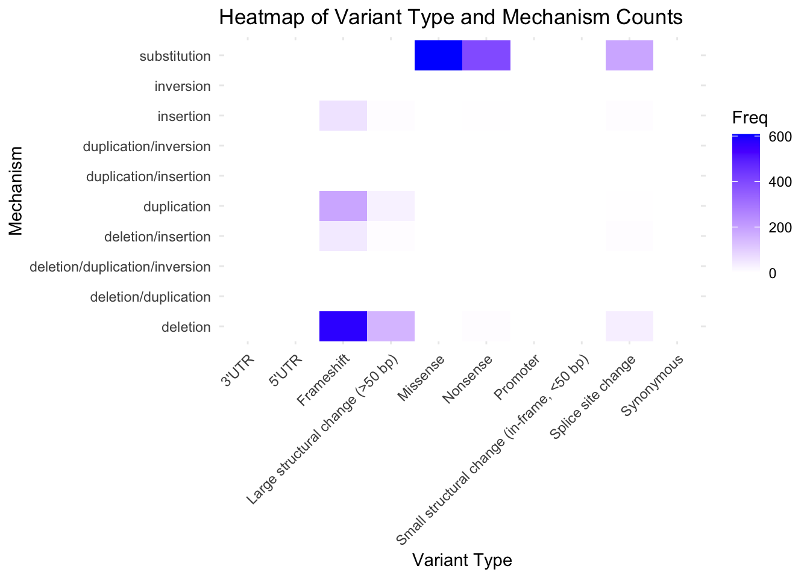

library(tidyr)
library(dplyr)
library(readr)
library(readxl)
library(janitor)
library(stringr)
library(skimr)
library(purrr)
library(forcats)Hemophilia_Statistical_Analysis
Data Preparation
variants <- readxl::read_excel(here::here('CHAMP_Variant_List_2022.xlsx'), sheet = 2, guess_max = 4000)
str(variants)tibble [4,050 × 21] (S3: tbl_df/tbl/data.frame)
$ HGVS cDNA : chr [1:4050] "c.101A>T" "c.102C>G" "c.103T>A" "c.103T>C" ...
$ hg19 Coordinates : chr [1:4050] "154250727" "154250726" "154250725" "154250725" ...
$ HGVS Protein : chr [1:4050] "p.(Asp34Val)" "p.(Asp34Glu)" "p.(Tyr35Asn)" "p.(Tyr35His)" ...
$ Mature Protein : chr [1:4050] "Asp15Val" "Asp15Glu" "Tyr16Asn" "Tyr16His" ...
$ Variant Type : chr [1:4050] "Missense" "Missense" "Missense" "Missense" ...
$ Mechanism : chr [1:4050] "Substitution" "Substitution" "Substitution" "Substitution" ...
$ Exon : chr [1:4050] "1" "1" "1" "1" ...
$ Codon : chr [1:4050] "15" "15" "16" "16" ...
$ Domain : chr [1:4050] "A1" "A1" "A1" "A1" ...
$ Subtype : chr [1:4050] "Heavy chain" "Heavy chain" "Heavy Chain" "Heavy chain" ...
$ In Poly A : chr [1:4050] "N" "N" "N" "N" ...
$ Severe
(<1 U/dL) : chr [1:4050] NA NA "X" NA ...
$ Moderate
(1-5 U/dL) : chr [1:4050] NA NA NA NA ...
$ Mild
(>5 U/dL) : chr [1:4050] "X" "X" NA NA ...
$ No FVIII level given : chr [1:4050] NA NA NA "X" ...
$ Reported Clinical
Severity : chr [1:4050] "Mild" "Mild" "Severe" "Severe" ...
$ History of Inhibitor : chr [1:4050] "Not reported" "Not reported" "No" "No" ...
$ Comments : chr [1:4050] NA NA NA NA ...
$ Year
Reported : chr [1:4050] "2014" "2008" "2012" "2000" ...
$ Reference Number : chr [1:4050] "256" "183, 186" "233" "111" ...
$ Newly Added in the Current Version: chr [1:4050] NA NA NA NA ...All columns have been loaded as characters, and we’ll be performing statistical analyses, so we’ll need to convert some columns to factors and numeric data types.
# Apply clean_names to the dataset
variants <- variants %>%
clean_names()
# Select relevant columns in snake case
variants_clean <- variants %>%
select(
hgvs_c_dna,
hg19_coordinates,
hgvs_protein,
mature_protein,
variant_type,
mechanism,
exon,
codon,
domain,
subtype,
in_poly_a,
reported_clinical_severity,
year_reported
)
# Convert explanatory variables to factors (categorical)
variants_clean <- variants_clean %>%
mutate(across(
c(
variant_type,
mechanism,
exon,
domain,
subtype,
in_poly_a,
reported_clinical_severity
), as.factor
))
# Ensure `year_reported` is numeric
variants_clean <- variants_clean %>%
mutate(year_reported = as.numeric(year_reported))
head(variants_clean)# A tibble: 6 × 13
hgvs_c_dna hg19_coordinates hgvs_protein mature_protein variant_type mechanism
<chr> <chr> <chr> <chr> <fct> <fct>
1 c.101A>T 154250727 p.(Asp34Val) Asp15Val Missense Substitu…
2 c.102C>G 154250726 p.(Asp34Glu) Asp15Glu Missense Substitu…
3 c.103T>A 154250725 p.(Tyr35Asn) Tyr16Asn Missense Substitu…
4 c.103T>C 154250725 p.(Tyr35His) Tyr16His Missense Substitu…
5 c.104A>G 154250724 p.(Tyr35Cys) Tyr16Cys Missense Substitu…
6 c.106_107… 154250721_15425… p.(Met36Ala… Met17Alafs*3 Frameshift Deletion
# ℹ 7 more variables: exon <fct>, codon <chr>, domain <fct>, subtype <fct>,
# in_poly_a <fct>, reported_clinical_severity <fct>, year_reported <dbl>Research question
What are the most frequently reported causative genetic variants and their genomic locations associated with severe Hemophilia A (Factor VIII deficiency) in this dataset?
This analysis is based on reported unique genetic variants from the dataset, which is structured to highlight the diversity and characteristics of these variants rather than provide a representative sample of the Hemophilia population.
Background Information
Hemophilia is a bleeding disorder in which the blood does not clot properly because it is missing clotting factors. The cause is genetic inheritance, or more rarely acquired. Whether inherited or acquired, a genetic mutation leads to this factor deficiency. People with severe Hemophilia A (less than 1% of clotting factor VIII baseline, compared to normal baselines of 50-150%) must take weekly medicine in order to provide their bodies with the needed factor replacement. This helps prevent bruises and internal bleeding in joints, along with serious and life-threatening internal bleeding.
What are the cases, and how many are there?
2539 of 4038 records exist for people with severe Hemophilia A (compared to other clinical severity levels). We must note that this dataset excludes those who are “female or had more than one X chromosome or copy of F8 present” as they stated it “prevent[s] clear determination of the variant phenotype”.
Describe the method of data collection.
“The original database was developed to support the Hemophilia Inhibitor Research Study (HIRS) at the CDC, which enrolled more than 1,000 people with hemophilia, to allow accurate reporting and record-keeping…The first CHAMP Mutation List was posted online at the CDC.gov website in 2011…The database was compiled from existing literature reports and databases to include the first identifiable report of each novel F8 variant reported to cause hemophilia A…It was compiled from mutations listed originally in the Haemophilia A Mutation, Structure, Test and Resource Site (HAMSTeRS), as well as those from more than 350 additional publications…They are listed as Year 0 in the current database if the date of initial publication is not known. At the time of download, HAMSTeRS included 943 unique variants. The initial CHAMP Mutation List included 2,537 unique variants.”
This database is an activity of the Division of Blood Disorders and Public Health Genomics in the National Center on Birth Defects and Developmental Disabilities of the Centers for Disease Control and Prevention.
What type of study is this (observational/experiment)?
This study is observational.
Data Source
CDC Hemophilia Mutation Projects (CHAMP and CHBMP)
“The CHAMP F8 (factor VIII [8]) mutation list is an Excel database containing more than 4,000 changes in the F8 gene that have been reported to cause hemophilia A…Each mutation has been reviewed and uniquely identified using the Human Genome Variation Society nomenclature for DNA and predicted protein changes, as well as using traditional nomenclature based on the mature processed protein.”
It’s essential to note that in this dataset: “Each entry represents a single report of the given variant. Multiple reports of each variant are not collected, unless they occurred in the same calendar year, in which case they are incorporated into a single listing as the first report. The CDC Variant Lists therefore do not include a group of people with the same variant and cannot be assumed to be representative of all people with the reported variant. Their use for phenotypic analysis is therefore limited.”
Response Variable
What is the response variable, and what type is it (numerical/categorical)?
The response variable is: Reported Clinical Severity and it is categorical.
Explanatory Variable/s
What is the explanatory variable(s), and what type is it (numerical/categorical)?
Multiple explanatory variables exist: HGVS cDNA (categorical), hg 19 Coordinates (categorical), HGVS Protein (categorical), Mature Protein (categorical), Variant Type (categorical), Mechanism (categorical), Exon (categorical), Codon (categorical), Domain (categorical), Subtype (categorical), and in Poly A (categorical). Field definitions are included in the dataset. We also have year reported, which is a numerical variable.
We’re not including these columns: severe, moderate, mild, no fvIII, history of inhibitor, comments, reference number, newly added in this current version. We’ll use the Reported Clinical Severity column.
Exploratory summary statistics
We’ll explore the broader dataset before we investigate severe Hemophilia, by calculating some frequency tables and proportions.
variants_clean %>%
count(hgvs_c_dna) %>%
mutate(proportion = n / sum(n)) %>%
arrange(desc(n))variants_clean %>%
count(hg19_coordinates) %>%
mutate(proportion = n / sum(n)) %>%
arrange(desc(n))variants_clean %>%
filter(!is.na(hgvs_protein)) %>%
count(hgvs_protein) %>%
mutate(proportion = n / sum(n)) %>%
arrange(desc(n))I noticed that the highest number of data points for hgvs_protein are p.(=), n = 30. I’ll investigate further by checking frequency of mature_protein data.
variants_clean %>%
filter(!is.na(mature_protein)) %>%
count(mature_protein) %>%
mutate(proportion = n / sum(n)) %>%
arrange(desc(n))variants_clean %>%
count(variant_type) %>%
mutate(proportion = n / sum(n)) %>%
arrange(desc(n))The highest number of mature_protein data points is “=”. Through further background research I’ve learned that synonymous variant type (synonymous mutations), mean that the DNA changes but doesn’t result in a change to the amino acid sequence of the protein. Often, it’s believed that synonymous mutations are silent and do not cause diseases, but Inaba writes “recent studies have demonstrated that synonymous substitutions are not always silent.” Inaba discusses the novel and rare variant, p.(Leu40=)/c.120C>A, which is actually included in this dataset as one of thirty synonymous variants. Inaba suggests a synonymous variant genotype is linked to mild clinical severity phenotype, but the CHAMP dataset shows 8 severe individuals and 12 mild individuals with a synonymous variant.
Information on Hemophilia B and synonymous variants seemed more accessible than articles on Hemophilia A and synonymous variants. Perhaps synonymous variants in Hemophilia A are underresearched, understandably, as it points to an even rarer subsect of a rare population.
Inaba, H., Shinozawa, K., Fukutake, K. and Amano, K. (2018), A novel synonymous variant in the F8 gene, p.(Leu40=)/c.120C>A, likely causes mild haemophilia A. Haemophilia, 24: e289-e292. https://doi.org/10.1111/hae.13568
variants_clean <- variants_clean %>%
mutate(mechanism = str_to_lower(mechanism))
variants_clean %>%
count(mechanism) %>%
mutate(proportion = n / sum(n)) %>%
arrange(desc(n))variants_clean %>%
count(exon) %>%
mutate(proportion = n / sum(n)) %>%
arrange(desc(n))variants_clean %>%
filter(!is.na(codon)) %>%
count(codon) %>%
arrange(desc(n))variants_clean %>%
count(domain) %>%
mutate(proportion = n / sum(n)) %>%
arrange(desc(n))I’m noting that we do not want to standardize case to clean data for Domain, because A1 is shown as different from a1 on the “figures” page of the original dataset workbook.
#Subtype can be cleaned through case standardization
variants_clean <- variants_clean %>%
mutate(subtype = str_to_lower(subtype))
variants_clean %>%
count(subtype) %>%
mutate(proportion = n / sum(n)) %>%
arrange(desc(n))variants_clean <- variants_clean %>%
mutate(in_poly_a = str_to_lower(in_poly_a))
variants_clean %>%
count(in_poly_a) %>%
mutate(proportion = n / sum(n)) %>%
arrange(desc(n))variants_clean <- variants_clean %>%
mutate(reported_clinical_severity = str_to_lower(reported_clinical_severity))
variants_clean %>%
count(reported_clinical_severity) %>%
mutate(proportion = n / sum(n)) %>%
arrange(desc(n))Reported clinical severity shows severe, mild, moderate, not reported, and several categories that show a mix of severities, divided by a / symbol. That could be a data entry issue or uncertainty due to lack of information in a publication. One could explore this more, but we have 2,359 severe cases, 58% of the dataset, and can exclude the 72 mixed severe severity cases to simplify analysis.
variants_clean %>%
count(year_reported) %>%
mutate(proportion = n / sum(n)) %>%
arrange(desc(n))purrr::map_dfr(variants_clean, ~as.data.frame(head(sort(table(.), decreasing = TRUE), 10)), .id = "variable") variable . Freq
1 hgvs_c_dna c.-112G>A 1
2 hgvs_c_dna c.-113_-134dupins 1
3 hgvs_c_dna c.-1171-?_1271+?del 1
4 hgvs_c_dna c.-1171-?_143+?del 1
5 hgvs_c_dna c.-1171-?_143+?delins263kb 1
6 hgvs_c_dna c.-1171-?_388+?del 1
7 hgvs_c_dna c.-1171-?_670+?del 1
8 hgvs_c_dna c.-1171-?_787+?del 1
9 hgvs_c_dna c.-126C>T 1
10 hgvs_c_dna c.-13-?del 1
11 hg19_coordinates 154065972 4
12 hg19_coordinates 154088865 4
13 hg19_coordinates 154128172 4
14 hg19_coordinates 154132663 4
15 hg19_coordinates 154133280 4
16 hg19_coordinates 154133291 4
17 hg19_coordinates 154185227 4
18 hg19_coordinates 154185302 4
19 hg19_coordinates 154197713 4
20 hg19_coordinates 154221206 4
21 hgvs_protein p.(=) 30
22 hgvs_protein p.(Leu1223*) 4
23 hgvs_protein p.(His1234Glnfs*2) 3
24 hgvs_protein p.(Met681Ile) 3
25 hgvs_protein p.(Phe672del) 3
26 hgvs_protein p.(Phe70*) 3
27 hgvs_protein p.(Ser872*) 3
28 hgvs_protein p.(Ser906*) 3
29 hgvs_protein p.(Trp1048*) 3
30 hgvs_protein p.(Trp1554*) 3
31 mature_protein = 30
32 mature_protein Leu1204* 4
33 mature_protein His1215Glnfs*2 3
34 mature_protein Met662Ile 3
35 mature_protein Phe51* 3
36 mature_protein Phe653del 3
37 mature_protein Ser853* 3
38 mature_protein Ser887* 3
39 mature_protein Trp1029* 3
40 mature_protein Trp1535* 3
41 variant_type Missense 1803
42 variant_type Frameshift 1052
43 variant_type Nonsense 460
44 variant_type Splice site change 351
45 variant_type Large structural change (>50 bp) 236
46 variant_type Small structural change (in-frame, <50 bp) 86
47 variant_type Synonymous 30
48 variant_type Promoter 11
49 variant_type 5'UTR 8
50 variant_type 3'UTR 1
51 mechanism substitution 2586
52 mechanism deletion 997
53 mechanism duplication 278
54 mechanism insertion 84
55 mechanism deletion/insertion 81
56 mechanism deletion/duplication 3
57 mechanism duplication/insertion 3
58 mechanism inversion 3
59 mechanism deletion/duplication/inversion 1
60 mechanism deletion/inversion 1
61 exon 14 861
62 exon 13 190
63 exon 4 176
64 exon 7 161
65 exon 11 157
66 exon 16 156
67 exon 18 130
68 exon 8 126
69 exon 17 121
70 exon 3 114
71 codon 425 9
72 codon 542 9
73 codon 167 8
74 codon 2229 8
75 codon 282 8
76 codon 48 8
77 codon -19 7
78 codon 102 7
79 codon 153 7
80 codon 1707 7
81 domain A1 750
82 domain A2 727
83 domain B 694
84 domain A3 655
85 domain C2 304
86 domain C1 294
87 domain a3 43
88 domain a1 34
89 domain Signal 27
90 domain a2 19
91 subtype heavy chain 2228
92 subtype light chain 1219
93 subtype multiple domains 126
94 subtype single domain 104
95 subtype 165 1
96 in_poly_a n 3832
97 in_poly_a y 176
98 reported_clinical_severity severe 2359
99 reported_clinical_severity mild 772
100 reported_clinical_severity moderate 521
101 reported_clinical_severity not reported 260
102 reported_clinical_severity moderate/severe 64
103 reported_clinical_severity mild/moderate 54
104 reported_clinical_severity mild/severe 6
105 reported_clinical_severity mild/moderate/severe 2
106 year_reported 2008 406
107 year_reported 2012 340
108 year_reported 2018 314
109 year_reported 2016 237
110 year_reported 2013 232
111 year_reported 2010 208
112 year_reported 0 206
113 year_reported 2021 196
114 year_reported 2006 171
115 year_reported 2005 154We’ve gotten a general sense of the dataset. Now, let’s start exploring severe Hemophilia by filtering for that clinical severity only.
severe_hemo <- variants_clean %>%
filter(reported_clinical_severity == "severe")
# Convert explanatory variables to factors (categorical)
severe_hemo <- severe_hemo %>%
mutate(across(
c(
variant_type,
mechanism,
exon,
domain,
subtype,
in_poly_a,
reported_clinical_severity
), as.factor
))skim(severe_hemo)| Name | severe_hemo |
| Number of rows | 2359 |
| Number of columns | 13 |
| _______________________ | |
| Column type frequency: | |
| character | 5 |
| factor | 7 |
| numeric | 1 |
| ________________________ | |
| Group variables | None |
Variable type: character
| skim_variable | n_missing | complete_rate | min | max | empty | n_unique | whitespace |
|---|---|---|---|---|---|---|---|
| hgvs_c_dna | 0 | 1.00 | 6 | 59 | 0 | 2359 | 0 |
| hg19_coordinates | 5 | 1.00 | 9 | 45 | 0 | 2012 | 0 |
| hgvs_protein | 421 | 0.82 | 5 | 28 | 0 | 1845 | 0 |
| mature_protein | 411 | 0.83 | 1 | 26 | 0 | 1854 | 0 |
| codon | 214 | 0.91 | 1 | 14 | 0 | 1332 | 0 |
Variable type: factor
| skim_variable | n_missing | complete_rate | ordered | n_unique | top_counts |
|---|---|---|---|---|---|
| variant_type | 0 | 1.00 | FALSE | 9 | Fra: 861, Mis: 608, Non: 403, Spl: 229 |
| mechanism | 0 | 1.00 | FALSE | 10 | sub: 1201, del: 801, dup: 219, ins: 71 |
| exon | 0 | 1.00 | FALSE | 179 | 14: 655, 13: 86, 4: 85, 16: 79 |
| domain | 336 | 0.86 | FALSE | 12 | B: 563, A1: 401, A2: 352, A3: 328 |
| subtype | 228 | 0.90 | FALSE | 4 | hea: 1335, lig: 606, mul: 107, sin: 83 |
| in_poly_a | 18 | 0.99 | FALSE | 2 | n: 2203, y: 138 |
| reported_clinical_severity | 0 | 1.00 | FALSE | 1 | sev: 2359 |
Variable type: numeric
| skim_variable | n_missing | complete_rate | mean | sd | p0 | p25 | p50 | p75 | p100 | hist |
|---|---|---|---|---|---|---|---|---|---|---|
| year_reported | 0 | 1 | 1901.49 | 453.74 | 0 | 2005 | 2010 | 2016 | 2022 | ▁▁▁▁▇ |
# Frequency count for variant_type
variant_type_count <- severe_hemo %>%
count(variant_type) %>%
arrange(desc(n))
# Frequency count for mechanism
mechanism_count <- severe_hemo %>%
count(mechanism) %>%
arrange(desc(n))
# Frequency count for variant_type and mechanism grouped together
grouped_variant_mechanism_count <- severe_hemo %>%
count(variant_type, mechanism) %>%
arrange(desc(n))
# View the frequency counts
variant_type_count
mechanism_count
grouped_variant_mechanism_countlibrary(ggplot2)
# Bar plot for variant_type frequency
ggplot(variant_type_count, aes(x = reorder(variant_type, n), y = n)) +
geom_bar(stat = "identity", fill = "skyblue") +
coord_flip() +
labs(title = "Frequency of Variant Types",
x = "Variant Type",
y = "Frequency") +
theme_minimal()
# Bar plot for mechanism frequency
ggplot(mechanism_count, aes(x = reorder(mechanism, n), y = n)) +
geom_bar(stat = "identity", fill = "lightgreen") +
coord_flip() +
labs(title = "Frequency of Mechanisms",
x = "Mechanism",
y = "Frequency") +
theme_minimal()
# Grouped bar plot for variant_type and mechanism
ggplot(grouped_variant_mechanism_count, aes(x = variant_type, y = n, fill = mechanism)) +
geom_bar(stat = "identity", position = "stack") +
labs(title = "Variant Type and Mechanism Count",
x = "Variant Type",
y = "Count",
fill = "Mechanism") +
theme_minimal() +
coord_flip()
# Secondary grouping: Explore how exon, codon, domain, subtype, and in_poly_a relate to variant_type and mechanism
# Replace NA values in factor columns with "Missing" level
severe_hemo_cleaned <- severe_hemo %>%
mutate(
exon = fct_na_value_to_level(exon, "Missing"),
codon = fct_na_value_to_level(codon, "Missing"),
domain = fct_na_value_to_level(domain, "Missing"),
subtype = fct_na_value_to_level(subtype, "Missing"),
in_poly_a = fct_na_value_to_level(in_poly_a, "Missing")
)
# Explore exon counts grouped by variant_type and mechanism
exon_count <- severe_hemo_cleaned %>%
count(variant_type, mechanism, exon) %>%
arrange(desc(n))
# Explore codon counts grouped by variant_type and mechanism
codon_count <- severe_hemo_cleaned %>%
count(variant_type, mechanism, codon) %>%
arrange(desc(n))
# Explore domain counts grouped by variant_type and mechanism
domain_count <- severe_hemo_cleaned %>%
count(variant_type, mechanism, domain) %>%
arrange(desc(n))
# Explore subtype counts grouped by variant_type and mechanism
subtype_count <- severe_hemo_cleaned %>%
count(variant_type, mechanism, subtype) %>%
arrange(desc(n))
# Explore in_poly_a counts grouped by variant_type and mechanism
in_poly_a_count <- severe_hemo_cleaned %>%
count(variant_type, mechanism, in_poly_a) %>%
arrange(desc(n))
# View some of these counts
exon_count
codon_count
domain_count
subtype_count
in_poly_a_count# Get the top 10 most frequent exons
exon_count_top10 <- exon_count %>%
top_n(10, n)
# Get the top 10 most frequent codons and filter out missing values because they were dominating the visualization
codon_count_top10 <- codon_count %>%
filter(codon != "Missing") %>%
top_n(10, n)
# Get the top 10 most frequent domains
domain_count_top10 <- domain_count %>%
filter(domain != "Missing") %>%
top_n(10, n)
# Get the top 10 most frequent subtypes
subtype_count_top10 <- subtype_count %>%
top_n(10, n)
# Get the top 10 most frequent in_poly_a
in_poly_a_count_top10 <- in_poly_a_count %>%
top_n(10, n)# Grouped bar plot for exon_count_top10
ggplot(exon_count_top10, aes(x = reorder(exon, n), y = n, fill = variant_type)) +
geom_bar(stat = "identity", position = "stack") +
facet_wrap(~mechanism) +
labs(title = "Top 10 Exon Counts Grouped by Variant Type and Mechanism",
x = "Exon",
y = "Count",
fill = "Variant Type") +
theme_minimal() +
coord_flip() +
theme(axis.text.x = element_text(angle = 45, hjust = 1),
axis.text.y = element_text(size = 8))
# Grouped bar plot for codon_count_top10
ggplot(codon_count_top10, aes(x = reorder(codon, n), y = n, fill = variant_type)) +
geom_bar(stat = "identity", position = "stack") +
facet_wrap(~mechanism) +
labs(title = "Top 10 Codon Counts Grouped by Variant Type and Mechanism",
x = "Codon",
y = "Count",
fill = "Variant Type") +
theme_minimal() +
coord_flip() +
theme(axis.text.x = element_text(angle = 45, hjust = 1),
axis.text.y = element_text(size = 8))
# Grouped bar plot for domain_count_top10
ggplot(domain_count_top10, aes(x = reorder(domain, n), y = n, fill = variant_type)) +
geom_bar(stat = "identity", position = "stack") +
facet_wrap(~mechanism) +
labs(title = "Top 10 Domain Counts Grouped by Variant Type and Mechanism",
x = "Domain",
y = "Count",
fill = "Variant Type") +
theme_minimal() +
coord_flip() +
theme(axis.text.x = element_text(angle = 45, hjust = 1),
axis.text.y = element_text(size = 8))
# Grouped bar plot: All domains on y-axis, color by variant_type
ggplot(domain_count, aes(x = n, y = domain, fill = variant_type)) +
geom_bar(stat = "identity", position = "stack") +
labs(title = "Variant Type by Domain",
x = "Count",
y = "Domain",
fill = "Variant Type") +
theme_minimal() +
theme(axis.text.x = element_text(size = 8),
axis.text.y = element_text(size = 8)) +
scale_y_discrete(limits = rev(levels(domain_count$domain)))
# Grouped bar plot for subtype_count_top10
ggplot(subtype_count_top10, aes(x = reorder(subtype, n), y = n, fill = variant_type)) +
geom_bar(stat = "identity", position = "stack") +
facet_wrap(~mechanism) +
labs(title = "Top 10 Subtype Counts Grouped by Variant Type and Mechanism",
x = "Subtype",
y = "Count",
fill = "Variant Type") +
theme_minimal() +
coord_flip() +
theme(axis.text.x = element_text(angle = 45, hjust = 1),
axis.text.y = element_text(size = 8))
I’m noticing a pattern of missing secondary data when the variant type is a splice site change, I’ve noticed this with domain and subtype. I’ll investigate the reason for this further by conducting some external keyword research on scholarly articles. I’ll explore more of what missing data says for each of the secondary variables.
# Grouped bar plot for in_poly_a_count_top10
ggplot(in_poly_a_count_top10, aes(x = reorder(in_poly_a, n), y = n, fill = variant_type)) +
geom_bar(stat = "identity", position = "stack") +
facet_wrap(~mechanism) +
labs(title = "Top 10 In Poly A Counts Grouped by Variant Type and Mechanism",
x = "In Poly A",
y = "Count",
fill = "Variant Type") +
theme_minimal() +
coord_flip() +
theme(axis.text.x = element_text(angle = 45, hjust = 1),
axis.text.y = element_text(size = 8))
# Frequency of combinations: Primary (variant_type, mechanism) and Secondary Variables
combination_count <- severe_hemo_cleaned %>%
group_by(variant_type, mechanism, exon, codon, domain, subtype, in_poly_a) %>%
tally() %>%
ungroup() %>%
arrange(desc(n)) # Sort by most frequent combinations
# View the top 10 most frequent combinations
head(combination_count, 10)# A tibble: 10 × 8
variant_type mechanism exon codon domain subtype in_poly_a n
<fct> <fct> <fct> <fct> <fct> <fct> <fct> <int>
1 Missense substitution 11 542 A2 heavy chain n 7
2 Missense substitution 3 110 A1 heavy chain n 6
3 Missense substitution 1 -19 Signal heavy chain n 5
4 Missense substitution 14 701 A2 heavy chain n 5
5 Missense substitution 15 1732 A3 light chain n 5
6 Missense substitution 6 236 A1 heavy chain n 5
7 Missense substitution 11 528 A2 heavy chain n 4
8 Missense substitution 12 612 A2 heavy chain n 4
9 Missense substitution 14 1707 A3 light chain n 4
10 Missense substitution 16 1835 A3 light chain n 4# Group data by year_reported and variant_type
year_variant_trend <- severe_hemo_cleaned %>%
filter(year_reported != '0') %>%
count(year_reported, variant_type) %>%
arrange(year_reported)
# Visualize how variant_type has changed over time
ggplot(year_variant_trend, aes(x = year_reported, y = n, color = variant_type)) +
geom_line() +
geom_point() +
labs(title = "Trend of Variant Type Over Time",
x = "Year Reported",
y = "Count",
color = "Variant Type") +
theme_minimal() +
theme(axis.text.x = element_text(angle = 45, hjust = 1))
Frameshift and missense seemed to spike in count various times since 2002. They’re noticeable, with much higher counts than other variant types.
Let’s return our focus to our primary explanatory variables and visualize the distribution of variant types by mechanism.
# Create a grouped bar plot for variant_type and mechanism
ggplot(severe_hemo_cleaned, aes(x = variant_type, fill = mechanism)) +
geom_bar(position = "fill") +
labs(title = "Distribution of Variant Type by Mechanism",
x = "Variant Type",
y = "Proportion",
fill = "Mechanism") +
theme_minimal() +
coord_flip()
I see a lot of substitution and deletion. Let’s perform a statistical test to test independence and statistically significance between variant type and mechanism.
top_variant_types <- severe_hemo_cleaned %>%
count(variant_type) %>%
top_n(5, n) %>%
pull(variant_type)
top_mechanisms <- severe_hemo_cleaned %>%
count(mechanism) %>%
top_n(5, n) %>%
pull(mechanism)
# Filter the data to include only the top categories
subset_data <- severe_hemo_cleaned %>%
filter(variant_type %in% top_variant_types, mechanism %in% top_mechanisms)
# Create the contingency table and run Fisher's test
contingency_table <- table(subset_data$variant_type, subset_data$mechanism)
fisher_result <- fisher.test(contingency_table, simulate.p.value = TRUE)
# Print the result
print(fisher_result)
Fisher's Exact Test for Count Data with simulated p-value (based on
2000 replicates)
data: contingency_table
p-value = 0.0004998
alternative hypothesis: two.sidedWith a p-value <0.05, there is a high probability of a statistically significant relationship between variant type and mechanism. I’ll create a heat map of the contingency table to better understand the patterns.
# Visualize the contingency table using a heatmap
ggplot(as.data.frame(as.table(contingency_table)), aes(Var1, Var2, fill = Freq)) +
geom_tile() +
scale_fill_gradient(low = "white", high = "blue") +
labs(title = "Heatmap of Variant Type and Mechanism Counts",
x = "Variant Type",
y = "Mechanism") +
theme_minimal() +
theme(axis.text.x = element_text(angle = 45, hjust = 1))
We can see that frameshift type with deletion mechanism and missense type with substitution mechanism are the most frequent types, followed by nonsense variant with substitution. This confirms some of the exploratory graphs from earlier in the report.